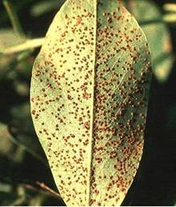
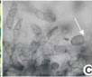
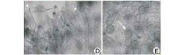
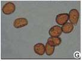

GROUNDNUT :: MAJOR DISEASE :: RUST
Rust - Puccinia arachidis
Symptoms
The disease attacks all aerial parts of the plant. The disease is usually found when the plants are about 6 weeks old. Small brown to chestnut dusty pustules (uredosori) appear on the lower surface of leaves. The epidermis ruptures and exposes a powdery mass of uredospores. Corresponding to the sori, small, necrotic, brown spots appear on the upper surface of leaves. The rust pustules may be seen on petioles and stem. Late in the season, brown teliosori, as dark pustules, appear among the necrotic patches. In severe infection lower leaves dry and drop prematurely. The severe infection leads to production of small and shriveled seeds.
|  |
Symptoms |
Pathogen
The pathogen produces both uredial and telial stages. Uredial stages are produced abundant in groundnut and production of telia is limited. Uredospores are pedicellate, unicellular, yellow, oval or round and echinulated with 2 or 3 germpores. Teliospores are dark brown with two cells. Pycnial and aecial stages have not been recorded and there is no information available about the role of alternate host.
|  |  | |
Teliospores |
||
|  |
Uredospores |
Favourable Conditions
- High relative humidity (above 85 per cent).
- Heavy rainfall.
- Low temperature (20-25˚C).
Disease cycle
The pathogen survives as uredospores on volunter groundnut plants. The fungus also survives in infected plant debris in soil. The spread is mainly through wind borne inoculum of uredospores. The uredospores also spread as contamination of seeds and pods. Rainsplash and implements also help in dissemination. The fungus also survives on the collateral hosts like Arachis marginata, A. nambyquarae and A. prostrate.
Management
- Avoid monoculturing of groundnut.
- Remove volunteer groundnut plants and reservoir hosts.
- Spray mancozeb 2 kg or Wettable Sulphur 3 kg or Tridemorph 500ml or Chlorothalonil 2 kg/ha.
- Grow moderatelyresistant varieties like ALR 1.